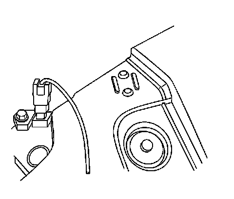
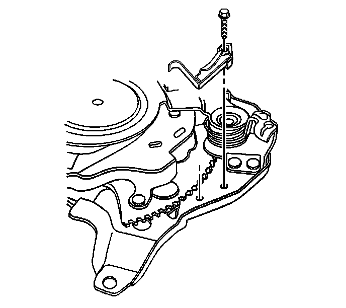

Parking Brake Warning Switch: Service and Repair
Park Brake Warning Lamp Switch Replacement
Removal Procedure
Caution: Refer to Battery Disconnect Caution.

1. Disconnect the negative battery cable. Refer to Battery Negative Cable Disconnection and Connection.
2. Without disconnecting the electrical connectors, remove the left side instrument panel electrical center/junction block and position aside. Refer to Instrument Panel Electrical Center or Junction Block Replacement - Left Side.
3. Remove the park brake warning lamp switch electrical connector.

4. Remove the park brake warning lamp switch mounting bolt.
5. Remove the park brake warning lamp switch.
Installation Procedure
1. Install the park brake warning lamp switch.
Notice: Refer to Fastener Notice.
2. Install the park brake warning lamp switch mounting bolt.
Tighten the bolt to 3 N.m (25 lb in).
3. Connect the park brake warning lamp switch electrical connector.
4. Install the left side instrument panel electrical center/junction block. Refer to Instrument Panel Electrical Center or Junction Block Replacement - Left Side.
5. Connect the negative battery cable. Refer to Battery Negative Cable Disconnection and Connection.